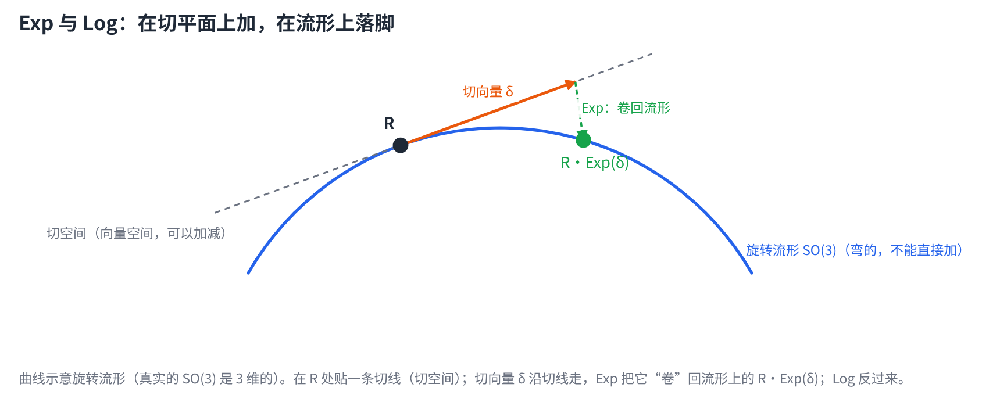
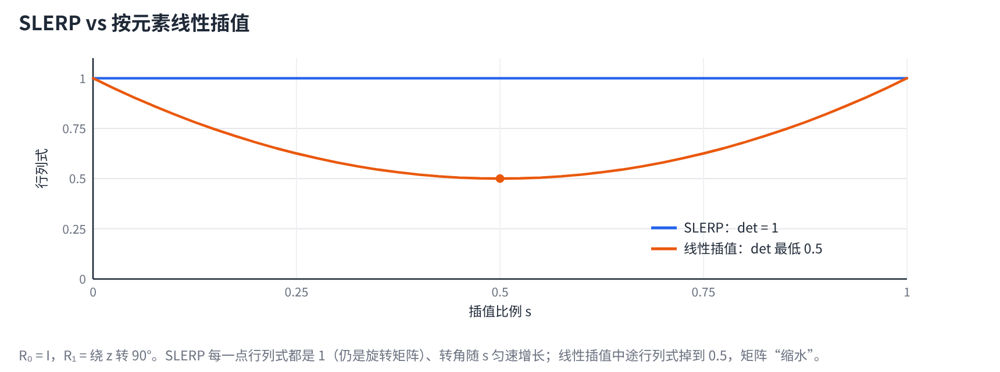
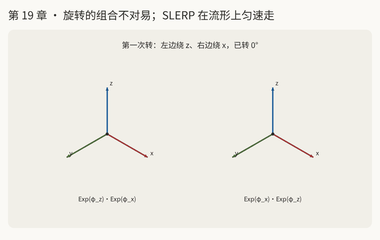

第 19 章 · 李群入门：在旋转上做加法、求导和插值
本地运行
git clone https://github.com/wikieden/math-and-eval-stats
cd math-and-eval-stats/code/notebooks
pip install jupyterlab torch numpy
jupyter lab ch19_lie_groups.ipynb也可以下载后直接用 VS Code 打开 .ipynb 运行。需要 GPU 的章节在 Colab 里选「代码执行程序 → 更改运行时类型 → GPU」。
本章回答：旋转矩阵不能直接相加、平均，那优化、滤波里"给姿态加一个小修正"该怎么写？exp、log、切空间、雅可比这些词在 SLAM、VIO、机械臂控制里到底指什么？两个姿态之间怎么平滑插值？
讲解日期：2026-11-25 · 上一章：第 18 章 3D 旋转与刚体变换 · 下一章：第 20 章 状态估计
对应原文：Solà 等《A micro Lie theory for state estimation in robotics》materials/text/papers/micro-lie-theory-1812.01537.txt§II L102 起（Exp / Log 式 (21)(22) L482–L484）、右雅可比 L650–L680、L824–L832；Solà《Quaternion kinematics for the error-state Kalman filter》materials/text/papers/quaternion-kinematics-eskf-1711.02508.txt§4（扰动与雅可比）
本章缩写：SO(3) = Special Orthogonal group in 3D（三维 / 特殊正交群：所有旋转矩阵）；SE(3) = Special Euclidean group in 3D（三维特殊欧氏群：旋转 + 平移）；so(3) = SO(3) 的切空间（李代数）；[φ]× = φ 的反对称矩阵（hat）；∨ = vee（反对称矩阵变回向量）；Exp / Log = 切空间 ↔ 群 的映射；J_r = right Jacobian（右雅可比）；⊕ = 在流形上"加"一个切向量；SLERP = Spherical Linear intERPolation（球面 / 线性 / 插值）；BCH = Baker–Campbell–Hausdorff（三位数学家的姓：两个 exp 相乘的展开式）。全部缩写见 附录 · 缩写与术语表
讲解
第一步：切空间 ↔ 群：exp 和 log（2026-11-25）
类比：地球表面和一张贴在某点的平面地图。 地球表面是弯的（旋转的集合是弯的），在某一点贴一张平地图（切空间），地图上可以随便加减向量；exp 把地图上的向量"卷"回球面，log 把球面上的点"摊"回地图。
旋转的切空间就是三维向量 φ = 轴 × 角（轴角向量）。
（第 18 章的 Rodrigues 公式；micro Lie theory 式 (21) L482）Log 反过来：\(\theta = \arccos\frac{\mathrm{tr}R - 1}{2}\)，\(\phi = \frac{\theta}{2\sin\theta}(R - R^\top)^\vee\)。
例子：Exp([0, 0, π/2]) = [[0, −1, 0], [1, 0, 0], [0, 0, 1]]（绕 z 转 90°）；Log 回来是 [0, 0, 1.5708]。
一句话：切空间里是普通向量，Exp 卷回旋转、Log 摊回向量；旋转的切向量就是轴角。
第二步：群上不能直接加：exp(a)·exp(b) ≠ exp(a + b)（2026-11-25）
类比：先往北走 100 公里、再往东走 100 公里，和先往东再往北，在地球上不会到同一个地方。
例子：a = 绕 z 转 90°，b = 绕 x 转 90°：
| 结果 | |
|---|---|
| Exp(a)·Exp(b) 和 Exp(a + b) 的最大差 | 0.803 |
| Exp(a)·Exp(b) 和 Exp(b)·Exp(a) 的最大差 | 1.000 |
| 真正的组合 Log(Exp(a)Exp(b)) | [1.209, 1.209, 1.209]（绕 [1, 1, 1] 转 120°） |
| 直接相加 a + b | [1.571, 0, 1.571] |
只有 a、b 很小时，组合才近似等于 a + b（BCH 展开的一阶）。所以"把两个姿态相加"、"把旋转矩阵按元素平均"都是错的。
流形上的加法（micro Lie theory §III）：在当前姿态 R 上加一个小修正 δ（写在 R 自己的切空间里）：
优化器、滤波器每一步更新姿态都这样写（第 20 章的 ESKF、第 55 章的 BA）。
一句话：旋转不对易，Exp(a)Exp(b) ≠ Exp(a + b)；更新姿态要写 R ⊕ δ = R·Exp(δ)。
第三步：扰动与雅可比：切空间里的小变化怎么传到群上（2026-11-25）
类比：在弯曲的地面上推一个箱子，推力方向和箱子实际滑动方向不完全一致，要乘一个修正系数。
切向量 φ 加一个小 δ，结果相当于在 Exp(φ) 的右边再乘一个小旋转，但那个小旋转不是 Exp(δ)，而是 Exp(J_r δ)：
（micro Lie theory L650–L680、L824–L832）
例子：φ = [0.3, −0.5, 0.8]（‖φ‖ = 0.990）：闭式 J_r 和数值差分最大差 6.9 × 10⁻⁸；对角元 [0.859, 0.884, 0.946]。φ = 0 时 J_r = I：转角很小时切空间和群几乎一样。
在哪用：IMU 预积分（第 56 章）、BA 里对姿态求雅可比（第 55 章）、机械臂姿态误差的反馈控制，都要这个 J_r。

图 19-1 · 曲面示意旋转流形，在 R 处贴一张切平面；切向量 δ 经 Exp 映到 R·Exp(δ)一句话：Exp(φ + δ) ≈ Exp(φ)Exp(J_r δ)；右雅可比把切空间里的增量换算到当前姿态的局部坐标。
第四步：SE(3)：平移部分也要"卷"一下（2026-11-25）
SE(3) 的切向量是 6 维 [ρ, φ]（平移部分 ρ、旋转部分 φ）。Exp 的旋转部分是 Exp(φ)，平移部分不是 ρ，而是 V(φ)ρ：
例子：ρ = [1, 0, 0]、φ = [0, 0, π/2]：平移 = [0.6366, 0.6366, 0]（= [2/π, 2/π, 0]），不是 [1, 0, 0]。直觉：切向量描述的是"一边转、一边往前走"的匀速运动（螺旋运动），走完一秒后的位置在一段圆弧的终点。
一句话：SE(3) 的 Exp 把 [ρ, φ] 当成匀速螺旋运动，平移要乘 V(φ)。
第五步：SLERP：在流形上走直线（2026-11-25）
类比：从北京飞到纽约走大圆航线，不是在地图上画直线。
先求两者之间的相对旋转的切向量，再按比例走。
例子：R₀ = I，R₁ = 绕 z 转 90°：s = 0 / 0.5 / 1 时转角 0° / 45° / 90°，匀速。对比：直接平均两个矩阵 ½(R₀ + R₁)，行列式 0.5，不再是旋转矩阵。
在哪用：两帧之间的姿态插值（第 64 章时间同步）、动作分块里平滑过渡末端姿态、多个姿态求平均（在切空间里迭代，里程碑 ME-M15）。

图 19-2 · 从 R₀ 到 R₁ 的 SLERP 路径（匀速转动）和按元素线性插值（中途矩阵不再正交、"缩水"）场景代码：scipy 里的写法（真实库；本书环境装了 scipy，没在本章代码里用）：
from scipy.spatial.transform import Rotation, Slerp
r = Rotation.from_rotvec([[0, 0, 0], [0, 0, np.pi / 2]]) # 轴角向量 = 切空间
slerp = Slerp([0, 1], r)
print(slerp(0.5).as_rotvec()) # [0, 0, π/4]
print((r[0].inv() * r[1]).as_rotvec()) # Log(R0ᵀ R1)
一句话：SLERP = R₀·Exp(s·Log(R₀ᵀR₁))，沿流形匀速转；直接平均矩阵会得到不是旋转的东西。
动画演示：切空间里的一条直线，卷到旋转上

可交互版：animations/19-lie-groups.html（下拉切换"组合不对易 / SLERP vs 线性插值"；滑块调 s）。
怎么看：
- 组合不对易：一个坐标系先绕 z 转 90° 再绕 x 转 90°，另一个顺序相反，最后朝向不同（第二步）；
- SLERP：坐标系从 R₀ 匀速转到 R₁；线性插值那一栏的坐标轴在中途缩短、不再垂直（第五步）。
练习与作答记录
题 1（第一步）：Exp([π, 0, 0]) 是什么矩阵？用 Log 的公式算回来时会遇到什么问题？
作答：（待作答）
题 2（第二步）：一个 IMU 每 1 毫秒测到角速度 ω = [0, 0, 1] rad/s。写出 1 毫秒后姿态的更新式（用 ⊕）。为什么不能写成 R + [ω]× · 0.001？
作答：（待作答）
题 3（第五步）：R₀ = 绕 x 转 30°，R₁ = 绕 x 转 90°。SLERP 在 s = 0.5 时是什么旋转？
作答：（待作答）
口诀
弯的群贴平地图，Exp 卷回、Log 摊开，轴角就是切向量；
群上不对易，先北后东不等于先东后北，更新写成 R 乘 Exp δ；
切空间加小量要乘右雅可比，SE(3) 平移乘 V；
SLERP 走大圆，直接平均不是旋转。
本章复习卡片
ST69（Exp / Log 与切空间；为什么更新写成 R·Exp(δ)）、ST70（右雅可比的作用）、ST71（SLERP 公式与为什么不能直接平均旋转）。练习做完后，按答错、卡住的地方补上。
附录 · 延伸阅读
留给以后深入学习用，不影响本章主线。★ 是建议先读的。
推荐阅读
| 读什么 | 读哪里 | 读它为了什么 |
|---|---|---|
| ★ Solà《A micro Lie theory》 | §II–III L102–L980 | Exp / Log、⊕ / ⊖、伴随、左右雅可比；机器人里最常用的那一小部分李理论 |
| ★ Solà《Quaternion kinematics for the ESKF》 | §4 起 | 四元数版本的扰动和雅可比，ESKF 直接用 |
Barfoot《State Estimation for Robotics》（materials/text/books/barfoot-state-estimation-robotics-2e.txt） |
矩阵李群一章 | 更系统的推导，SE(3) 的雅可比 |
| 第 18 章 3D 旋转与刚体变换 | Rodrigues、四元数 | 本章的前置 |
数学原理
- 李代数：SO(3) 的切空间是 3×3 反对称矩阵 [φ]×，和三维向量一一对应；Exp 就是矩阵指数 \(e^{[\phi]_\times}\)，Rodrigues 公式是它的闭式。
- BCH 公式：\(\text{Log}(\text{Exp}(a)\text{Exp}(b)) = a + b + \frac12[a, b] + \ldots\)，[a, b] = a × b（叉乘）；a、b 平行时叉乘为 0，才真正可加。
- 右雅可比的来历：\(\frac{d}{d\delta}\text{Log}(\text{Exp}(\phi)^{-1}\text{Exp}(\phi + \delta))\big|_{\delta=0} = J_r(\phi)\)；左雅可比把增量放在左边，\(J_l(\phi) = J_r(-\phi)\)。
- SE(3) 的 V(φ)：\(V = \int_0^1\text{Exp}(s\phi)ds\)，所以它就是"匀速旋转时平移被转动方向平均"的结果。
公式清单
| 公式 | 意思 |
|---|---|
| \(\text{Exp}(\phi) = I + \frac{\sin\theta}{\theta}[\phi]_\times + \frac{1-\cos\theta}{\theta^2}[\phi]_\times^2\) | 切空间 → SO(3) |
| \(\theta = \arccos\frac{\mathrm{tr}R - 1}{2}\)，\(\phi = \frac{\theta}{2\sin\theta}(R - R^\top)^\vee\) | Log |
| \(R\oplus\delta = R\,\text{Exp}(\delta)\) | 流形上的加法 |
| \(\text{Exp}(\phi + \delta) \approx \text{Exp}(\phi)\text{Exp}(J_r\delta)\) | 右雅可比 |
| \(R(s) = R_0\text{Exp}(s\,\text{Log}(R_0^\top R_1))\) | SLERP |
代码对照：把本章的数字用代码算一遍
代码在仓库本地
math-and-eval-stats/solutions/chapter-code/ch19_lie_groups.py，配套测试tests/test_ch19.py：
bash cd math-and-eval-stats/solutions/chapter-code uv run python ch19_lie_groups.py uv run pytest tests/test_ch19.py
讲义 ↔ 代码：
| 讲义 | 公式 | 写法 | 跑出来 |
|---|---|---|---|
| 第一步 Exp / Log | Rodrigues | so3_exp(PHI_Z)、so3_log(...) |
绕 z 转 90°；[0, 0, 1.5708] |
| 第二步 不对易 | 两种顺序 | so3_exp(PHI_Z) @ so3_exp(PHI_X) |
Log = [1.209, 1.209, 1.209] |
| 第三步 右雅可比 | 闭式 vs 差分 | right_jacobian(phi)、numeric_right_jacobian(phi) |
最大差 6.9e-8 |
| 第四步 SE(3) | V(φ)ρ | se3_exp([1, 0, 0], PHI_Z) |
平移 [0.6366, 0.6366, 0] |
| 第五步 SLERP | 切空间插值 | slerp(I, R1, 0.5) |
45° |
关键几行：
k = hat(phi); th = np.linalg.norm(phi)
R = np.eye(3) + np.sin(th) / th * k + (1 - np.cos(th)) / th**2 * k @ k # Exp
phi = th / (2 * np.sin(th)) * vee(R - R.T) # Log（θ 不接近 0、π）
r0 @ so3_exp(s * so3_log(r0.T @ r1)) # SLERP
代码里才看得到的 3 件事：
- θ → 0 要特殊处理：sinθ/θ、(1 − cosθ)/θ² 在 θ = 0 时是 0/0，代码在 θ < 10⁻⁹ 时直接用一阶近似 I + [φ]×。
- θ 接近 π 时 Log 不稳：sinθ → 0，公式里除以 sinθ 会放大误差；可靠的实现会在这里换一种求轴的办法。
- 数值雅可比在群上做差分：不是 (Exp(φ + h) − Exp(φ))/h（那是 3×3 矩阵的差），而是 Log(Exp(φ)ᵀExp(φ + h e_j))/h，得到切空间里的 3 维向量。
自己改一改（不影响练习答案）：
- 把
PHI_Z、PHI_X都缩小到 0.01 弧度，Exp(a)Exp(b) 和 Exp(a + b) 还差多少？ - 用
se3_exp算 ρ = [1, 0, 0]、φ = [0, 0, 2π]（转一整圈），平移是多少？